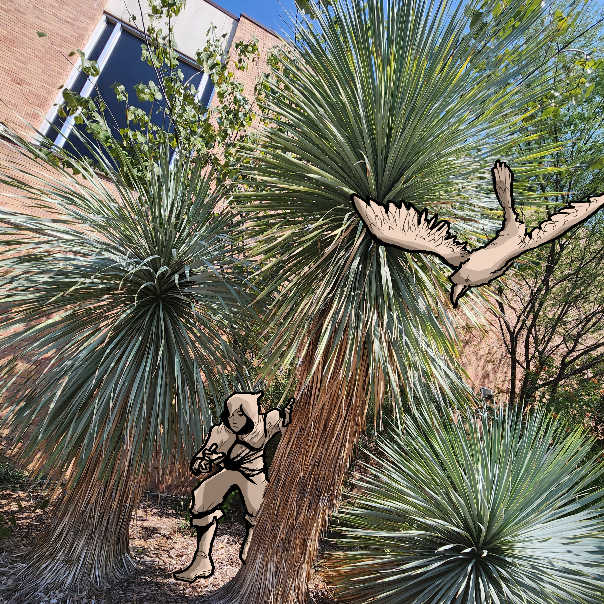

Beaked Yucca: The Ranger

Beaked yucca are hardy in both cold and hot environments. Their edible fruit offers some support for animals as well.
Scientific Name: Yucca rostrata
Lifespan: 70+ years
Native to: The Chihuahuan Desert
Rangers are in tune with nature, often acting alongside a animal familiar. They survive using tracking and adaptation to their surroundings, similar to the yucca's ability to withstand temperatures in both the negatives and highs.